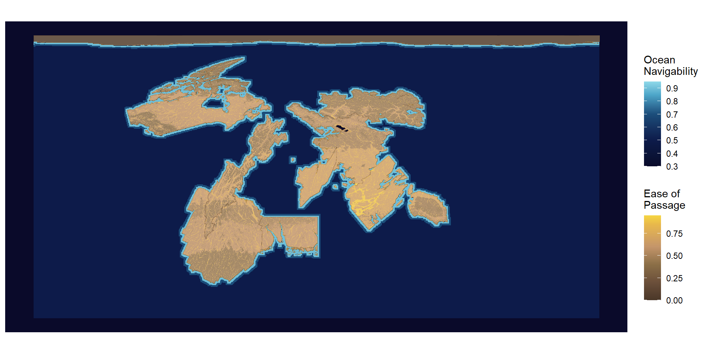
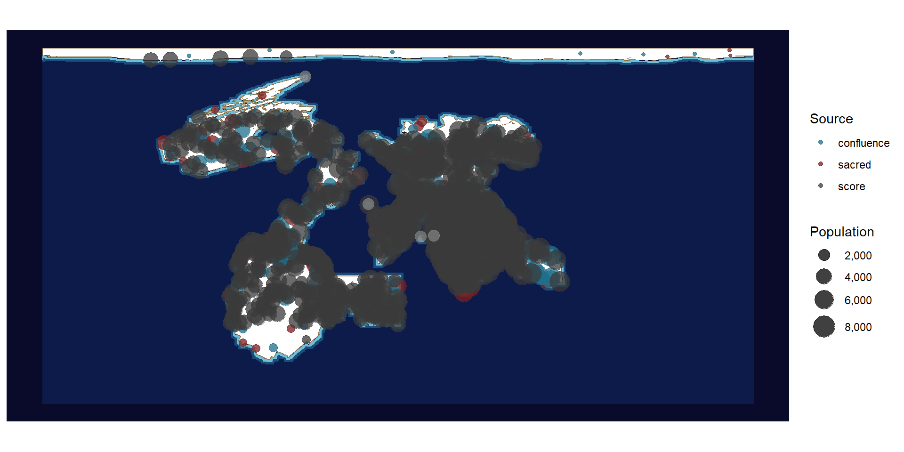

9 Population, Migration, Settlement
9.1 Of Why the Folk Are Where They Are
I have made it my practice, in every town I have entered these fifty years, to ask the same idle question of whoever will sit with me: why here? I have received, by my own tally, four hundred and eleven answers. An ancestor dreamed it. A beast lay down and would not rise. A quarrel divided a people and this is where the losing half stopped walking. A saint was buried, or a king was killed, or a woman followed a white hind into a wood and came out somewhere she liked better. I have written every one of them down and I would not part with a single page.
But I am a cartographer, and a cartographer counts. And when I laid the four hundred and eleven answers beside my charts, a thing became plain that nobody had told me and that most people did not care to hear: the towns are where the food is. Not near where the food is — where it is, within a half-day’s walk, near enough that a bad year is survivable and a good year is not wasted in the carrying. The dream, the hind, the buried saint: these are true stories about places that would have been settled anyway.
I put this to a woman in Adirondaq who had been very patient with me about her grandmother’s vision, and she heard me out, and said that I had explained why somebody could live here and not why they did, and that these were not the same question. I have thought about that a great deal since and I am no longer certain which of us was being the cartographer.
One further matter belongs here, for it governs everything that follows. There is a ceiling upon towns. The merchants reckon it at thirty — that a place may feed some thirty times what its own fields and thickets yield, by drawing on what comes in, and not a jot beyond. Above that number a town does not grow rich; it grows hungry, and then it grows smaller. I have seen the ruins of three that tried, and in each the story told locally is of a plague or a curse or a wicked lord. The granaries tell it differently.
9.2 Of the Ease and Difficulty of Going
Not all ground is equally willing to be crossed, and a traveller learns the schedule of its unwillingness in the legs before ever learning it in the head. Flat grass is generous. A river valley is better, for the water does half the labour and feeds you besides. A slope of any consequence begins to charge you, and the charge does not rise gently but doubles and doubles again, so that a hill which merely tires you becomes, a little steeper, a hill you go around; and I have gone around a great many. Above the snowline the ground stops bargaining altogether. The great ice of the northern cap is not difficult country. It is a wall with weather on it, and the folk who live along its edge do not speak of crossing it any more than they speak of crossing the sky.
And then there is the sea, which is the fastest road upon EART-H, and this took me the better part of my life to accept.
Every instinct of a walking man says otherwise. The sea is where the land stops. It drowns you. It has no inns. Yet I have watched a ship leave a harbour in Tusque and make in four days what cost me five weeks of ridges and fords and washed-out tracks, and arrive with more cargo than forty mules, and the crew not especially tired. The plainest way I can put it is this: upon the land, distance is measured in what lies between; upon the water, there is nothing between. The sea does not have terrain. That is the whole of its advantage and it is an enormous one.
I record without endorsement the explanation given me by a pilot out of the inner sea, who held that the ocean is fast because it is lower, and that everything upon EART-H is in some manner sliding gently toward the bottom of the world, ships included. I have already written in an earlier chapter what is said to lie at the bottom of the world, and I leave the two accounts to keep each other company.
9.3 Of the Paths Worn by Going
A road is not built upon EART-H. A road is worn, and the wearing takes longer than any life, so that no one alive has ever seen a road begin. They deepen and widen under ten thousand feet until they look like decisions somebody made, and they were not. Where the track of one people crosses the track of another, something happens at the crossing — first a place to leave a message, then a place to leave a cart, then a place where a family lives who will mind your cart, and then a town, and by then everybody has forgotten that it began as two sets of footprints going somewhere else.
Now I must say a thing about my own profession that will sound like vanity, and I have decided to set it down anyway because I believe it is true.
The road runs because people go. People go because they have heard there is something at the other end. And they have heard it because somebody told them. In the ordinary case that somebody was a cartographer, who walked in from a country the listener will never see, and said that the harvest was early in the Fingers this year, or that the ferry at the second crossing has been rebuilt, or that a man in Adirondaq will pay in silver for river-glass and nobody there knows what it is worth. I have watched a track thicken within three seasons of such a telling. I have also watched a track close within three seasons of a cartographer’s dying on it.
So we do not merely record the roads. We are one of the reasons there are roads, and I am aware that this is a convenient thing for a cartographer to believe. The strongest objection I have heard came from a ferryman on the Kiliman coast, who pointed out that the news I was so proud of carrying was mostly about prices, and that what I called binding the world together he would call telling merchants where to go. We had a pleasant argument. He was not wrong.
There is besides a belief, held seriously in more provinces than I expected, that the roads are older than the ground: that the paths were laid first, in the making of the world, and that the hills grew up around them afterward, which is why a road so often finds the one gap in a ridge that a walking person would never have found alone. I have crossed such gaps. I understand why the belief persists.
9.4 Of Why a Town Stands Where It Stands
Having counted, I can report that the towns of EART-H fall into three kinds according to the cause of their standing, and that the three do not look alike on the ground once you know to look.
Those that stand upon a shrine. Where a site of the seventh form or above was set down, a town is there. Not usually — always, so far as my charts go, and without the least regard for whether the place is fit to live in. I have visited a town of some two thousand souls that sits upon a shoulder of bare rock, hauls every drop of its water up a stair cut into the cliff, imports its grain at ruinous cost, and has stood in that spot for longer than its own records run, because a silver altar is there and a silver altar cannot be carried down the hill. These are the towns that make no sense, and there is one in every province, and asking why it is there is the only question in this chapter with a simple answer.
Those that stand where waters meet. Where two rivers of consequence join to make a third, there is a town, and it is generally a prosperous one, since goods coming down two valleys must be handled at the joining. That much any traveller would predict. Here is what I did not predict, and what took me years to credit: the place where the great river finally meets the sea is very often bare. Not always, but often enough that I stopped expecting a city there. Meanwhile a day and a half upstream, where two middling waters come together, stands a town of five thousand with a stone bridge. I have asked about this in six countries. In three I was told the river mouth is unlucky. In two I was told it is malarial. In one an old pilot said that the mouth is not a meeting of waters but an ending of them, and that nobody builds a market at an ending, and I confess this is the answer I have come to like best, though liking is not evidence.
Those that stand where the ground is good and the traffic passes. These are the great majority, and their siting is the plainest thing in the world: soil that yields, water at hand, a road going by. They are also, being ordinary, the ones whose founding stories are the most elaborate, as though a town knows when it needs an excuse.
To these I must add an observation about spacing, which no one seems to have set down. Walking inland, you will meet a town about every second day. Along a great river, rather less often. Along the coast, you may walk four days and meet nothing, and then a substantial port. The coast is the emptiest well-favoured country on EART-H, and the towns that are there are further apart and larger than any reckoning of the fishing would suggest. Stranger still, they sit back from the water — a half-hour’s walk inland, near always, with only sheds and a stair down at the shore itself. I have been given storms, raiders, salt in the wells, and the plain unhealthiness of sea air. I incline to raiders, on the grounds that the sheds are cheap and the town is not.

| source | Count | Total Population | Mean Population | Sacred Sites |
|---|---|---|---|---|
| score | 777 | 4,377,350 | 5,634 | 0 |
| confluence | 81 | 401,142 | 4,952 | 0 |
| sacred | 61 | 218,248 | 3,578 | 61 |
| manual_entrepot | 4 | 8,000 | 2,000 | NA |
9.5 Of the Sea-Folk, and of Certain Towns That Ought Not to Exist
Everything I have written above concerns a world got at by walking, and it is the world I know. There is another, laid over the top of it, and its people regard my whole account of settlement as a curiosity of the land-bound.
Consider what a chart cannot show. There are towns upon EART-H with no country behind them. An island of no great size in the inner sea, four hours’ sail from anywhere, with poor soil, no timber worth the name, and one indifferent spring — and upon it a town, with warehouses, and money-changers, and three languages spoken in the market before noon. By every rule I have set out in this chapter it should not be there. Nothing feeds it. No road reaches it. Its fields would not support the harbourmaster’s household.
It is there because it is four hours from everywhere, and everywhere is nine days from everywhere else by land.
I know of three such places in the inner sea and one far more remarkable in the north, upon the cold rim of Canada, which exists for no reason a person standing in it could tell you. Nothing grows. The winter is a punishment. But it is the only harbour from which the polar country can be reached at all, and so it is a town, and a rich one, and its people are quite unbothered by the fact that they live in a place chosen entirely by the sea.
The sea-folk themselves I have found hard to write about, having spent my life measuring a different thing. They do not think of the ocean as a gap. Ask one the distance between two ports and they will answer in days, and the answer will be the same in both directions, which no land traveller can ever say of anywhere. Their towns are not the coastal towns; the coastal towns are where the land-folk keep their sheds. The sea-folk’s own places are the islands and the far quays, and they hold — I have heard this in four separate seas and in three languages — that the land-folk are the ones who live at the edge of things.
Now I come to a matter I must handle carefully, having written a whole chapter earlier upon the nature of Confluence.
It is said everywhere that you may know a people by the beasts of their country: that the mountain folk are goat-touched and stubborn, that the marsh folk carry the heron in the length of their legs and the patience of their sitting, that the sea-folk are fish-marked, cold-blooded, and not to be trusted in a bargain. This is nonsense. It is nonsense in the plain sense that the marks of Confluence are made at one conception, from the beasts standing by at that hour, and are not passed down; the child of two heron-marked parents is no more likely to be heron-marked than any other child, as every midwife on EART-H will tell you and as I have set down already. A people cannot be goat-touched. Only a person can.
And yet. A child conceived aboard a ship at sea is conceived in the company of whatever is at sea. I have been told by sailors, and I have no way to test it, that the marks are common among them — gill-lines at the neck, the eye that shuts sideways, a tolerance of cold water that a physician in Tusque told me flatly was impossible and that I have myself watched. If that is so, then the sea-folk really are fish-marked more often than the rest of us, not because they are a kind, but because of where they happen to be when their children begin.
Which is to say the belief is false, and the observation behind it may not be, and I can tell you from long practice that this is the hardest sort of falsehood to argue anybody out of.
This chapter took me far more time than most of the others (saving only trade and connection which we will come to next). That time was not a burden though. This was me playing in human geography and demography. Trying to populate a planet from first principles. My first effort was an agent based model. I wanted to see if I could use carrying capacity of the land and group movement to seed the world with nomads who would lay down paths and sometimes settle or split into new groups when carrying capacity was exceeded. The model ran but was incredibly slow and never managed to explore much of the world. What I settled on was more deterministic: I built settlement scores based on carrying capacity, movement, and access to water. Then I stochastically sampled locations (forcing high tier sacred sites to be settlements) based on a weighted settlement score. I had to throw in a few rules about separation as carrying capacity didn’t end up varying as much as I expected and I initially ended up with hundreds of sites packing certain coastlines in Tusque and the Fingers. I gave myself a target population of 15 million people world wide and started filling settlements.
The reading behind this chapter falls into two piles. The first is the pile that made me want to do this at all.
Influences
- “Axioms for Reading the Landscape,” Peirce Lewis (Lewis 1979) — that ordinary landscape is our unwitting autobiography, written in a form nobody thought to falsify. I write this from his old office.
- Topophilia, Yi-Fu Tuan (Tuan 1974) — the affective bond between people and place, named and taken seriously; permission to care about this.
- Everything Sings, Denis Wood (Wood 2010) — an atlas of one small neighbourhood that maps the wind chimes, the jack-o’-lanterns, and where the newspapers land at dawn. Proof that pattern is everywhere the moment you agree to look.
- “What About People in Regional Science?”, Torsten Hägerstrand (Hägerstrand 1970) — a short, humane plea that models keep actual human beings inside them. This from the guy who insisted the Swedish Census agency should map everything to lovely 100m x 100m grids – a huge contribution to my existence as an academic.
- “A Computer Movie Simulating Urban Growth in the Detroit Region,” Waldo Tobler (Tobler 1970) — six pages containing, almost in passing, the first law of geography.
- Scale, Geoffrey West (West 2017) — the pleasure of finding that cities obey law-like regularities across four orders of magnitude.
Movement and migration
- “The Laws of Migration,” E. G. Ravenstein (Ravenstein 1885) — the founding statement: migration falls off with distance, proceeds in steps, and generates counterflows.
- “A Theory of Migration,” Everett S. Lee (Lee 1966) — push, pull, and the intervening obstacles between, which is what my conductance surface is a picture of.
- “The Hypothesis of the Mobility Transition,” Wilbur Zelinsky (Zelinsky 1971) — mobility as a regime that changes, rather than a constant of human nature. Also a former neighbor, I walk by his old house every day.
- Innovation Diffusion as a Spatial Process, Torsten Hägerstrand (Hägerstrand 1967) — how news moves across a surface.
Where settlements land
- Human Behavior and the Principle of Least Effort, George Kingsley Zipf (Zipf 1949) — rank-size, and the uncomfortable regularity of settlement hierarchies.
- Rural Settlement and Land Use, Michael Chisholm (Chisholm 1962) — how far a person will walk to a field, and what that distance does to the spacing of towns.
What a place can feed
- The Conditions of Agricultural Growth, Ester Boserup (Boserup 1965) — population pressure causes intensification rather than being capped by it. The strongest argument against the hard ceiling I have used.
- How Many People Can the Earth Support?, Joel E. Cohen (Cohen 1995) — a careful demolition of carrying capacity as a single number, worth reading precisely because my model uses one.
Connection, and the sea
- The Corrupting Sea, Horden and Purcell (Horden and Purcell 2000) — Mediterranean history as connectivity between fragmented microregions, held together by short-hop coastal sailing.
- Crossing the Bay of Bengal, Sunil Amrith (Amrith 2013) — a sea taken as the unit of analysis rather than the barrier between units, and the millions who crossed it.
- Before European Hegemony, Janet Abu-Lughod (Abu-Lughod 1989) — a thirteenth-century world system with no European center.